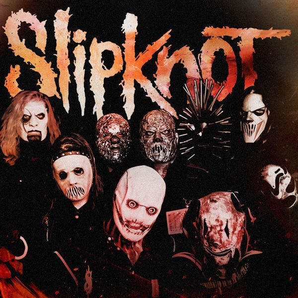

Slipknot
Slipknot es una banda estadounidense de metal alternativo formada en 1995 en Des Moines, Iowa, Estados Unidos. Sus integrantes en la actualidad son Corey Taylor, Craig Jones, Jim Root, Mick Thomson, Shawn Crahan y Sid Wilson. Slipknot es conocida por las máscaras características de cada uno de sus miembros, que cambian conforme han sacado más discografía. Sus miembros utilizan dos tipos de guitarra (principal y rítmica), un bajo, dos instrumentos de percusión personalizados, una batería e instrumentos electrónicos como sampler o mesas de mezclas. El sonido de la banda ha sido descrito como "una máquina trilladora devorando un grupo de tambores militares" El vocalista Corey Taylor también incorpora diversos estilos vocales, como por ejemplo la voz gutural, el canto melódico y el rapeo, mientras que las letras en general tienen un tono agresivo. Las influencias de la banda incluyen, entre otros géneros, el death metal, el thrash metal y el heavy metal, aunque suelen ser incluidos con asiduidad dentro del metal alternativo y el nu metal. También fueron incluidos en el movimiento conocido como nueva ola de heavy metal americano. Los inicios de Slipknot se remontan al año 1992. La banda sufrió muchos cambios en su formación antes del lanzamiento de su primera demo Mate.Feed.Kill.Repeat en 1996, en el que el vocalista era Anders Colsefini. En 1999 la banda lanzó su exitoso debut homónimo con Corey Taylor como nuevo vocalista. Desde entonces, han publicado 7 álbumes de estudio: Slipknot (1999), Iowa (2001), Vol. 3: The Subliminal Verses (2004), All Hope Is Gone (2008), que debutó en la posición #1 dentro del Billboard 200, .5: The Gray Chapter (2014) siendo este el segundo álbum de la banda en debutar en el número uno de Billboard 200, vendiendo 132.000 copias en su primera semana, We Are Not Your Kind (2019), y The End, So Far (2022), siendo este el último álbum con la discográfica Roadrunner Records. La banda ha lanzado cinco DVD, incluyendo Disasterpieces, del cual se han vendido 3 millones de copias en Estados Unidos. Slipknot ha vendido más de 30 millones de álbumes en todo el mundo.
